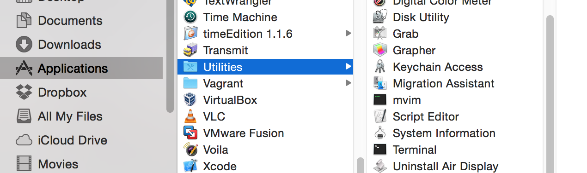
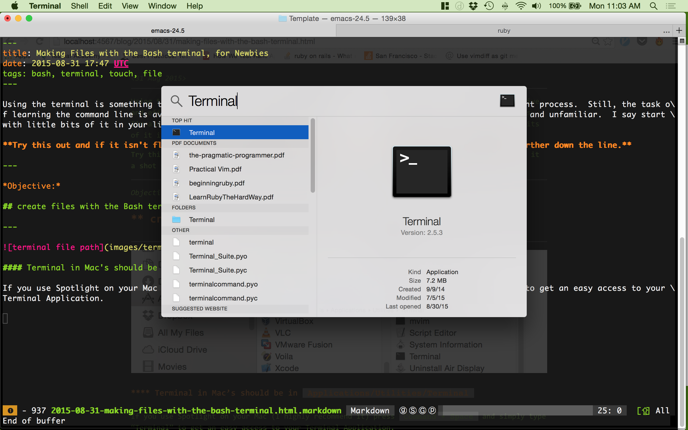
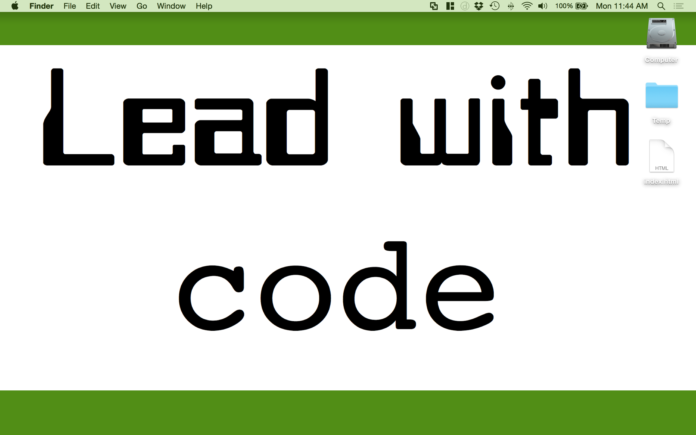

Making Files with the Bash terminal, for Newbies with Macs
<31 Aug 2015>
For those who don’t use the command line:
Try this out and if it isn’t floating your boat, it’s all good to jump ship and probably give it a shot further down the line.
Objective:
create files with the Bash terminal
Main commands:
- ls = “list” folder contents
- cd (folder name) = change directory to (this folder)
- touch (file name) = create file (named this name)
Terminal is an app that’s standard to most, if not all, Macs. Go ahead and find it and open it.

Terminal in Mac’s should be in Applications/Utilities/Terminal
If you use Spotlight on your Mac (I highly recommend it) press Command + Space and simply type “Terminal” to get an easy access to your Terminal Application.

Opening terminal, you start at your Home folder aka directory. If you type ls you’ll see all the folders and files in your directory.
- ls = for “list” contents
# Note: your terminal won't necessarily just be a "$" symbol
# but I'll be putting that here for simplicity
$ ls
Applications Downloads Library Pictures VirtualBox VMs flash middle telegraph
Desktop Dropbox Movies Public
Documents Music Scheme exercism journal.sh pgadmin.log
Notice how my directory has Desktop as an available directory. You should have a Desktop folder in your Home directory too.
My actual desktop looks like this:
We are going to move into your Desktop and list it’s contents. For my Desktop, I’ll only have my Temp folder.
- to move a file we use ‘cd (directory)’ cd = change directory
- then, ls to show it’s contents
$ cd Desktop
~/Desktop $ ls
Temp
~/Desktop $
Finally making a file in the desktop simply calls the “touch” command. Lets make a file called “index.html” in our Desktops
~/Desktop $ touch index.html
~/Desktop $
Nothing exciting happened in the Terminal itself, but if you look at the Desktop, you should see your file there. If you have a beloved text editor, you can open that ‘index.html’ file with that editor and make changes since it’s simply a text file.

Congratulations! You’ve made a file through Terminal
Using the terminal is something that can be extremely helpful in making development an effective and efficient process. Still, the task of learning the command line is avoided by many techies. I’m assuming this is because it can be overwhelming and unfamiliar. I say start with little bits of it in your life and work from there.
Objective:
create files with the Bash terminal
Main commands:
- ls = “list” folder contents
- cd (folder name) = change directory to (this folder)
- touch (file name) = create file (named this name)